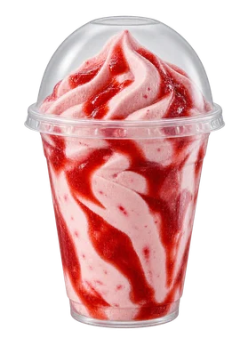
Morango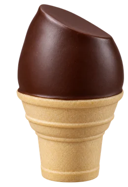
Moreninha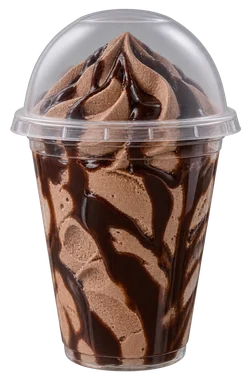
Chocolate
Mais sabor em cada momento!
Explore Nossos Sabores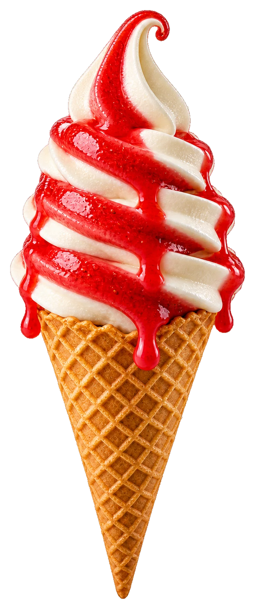
-
Ingredientes de Qualidade
Selecionamos os melhores ingredientes para o seu sabor.
-
Frescor e Cremosidade
Sorvetes sempre fresquinhos e irresistíveis.
-
Feito com Amor
Cada sabor é pensado para tornar seu dia melhor.
Sobre nós
Nossa história
Com mais de duas décadas de trajetória, a empresa familiar Qótimo Sorvetes foi estabelecida em 2000 na cidade de Jaraguá do Sul/SC, realizando assim o sonho de Ademir e Renata de criar sorvetes que unissem qualidade e amor.
Ademir acumulou vasta experiência ao longo de muitos anos na Duas Rodas Industrial, onde teve a oportunidade de se familiarizar com o desenvolvimento e a produção das melhores matérias-primas para a fabricação de sorvetes.
Como em todo empreendimento, os primeiros passos foram repletos de desafios. No entanto, com determinação e inúmeras histórias para compartilhar, os fundadores se viram dividindo sua residência com a modesta fábrica de sorvetes, que contava com um equipamento limitado. Com o passar do tempo, a empresa cresceu de forma constante, e a marca começou a conquistar credibilidade no mercado, tornando a expansão para uma unidade fabril maior uma necessidade inevitável.
Hoje, contando com a colaboração do filho mais velho, Igor, a Qótimo opera em um novo parque fabril com mais de 600 m², além de dispor de logística própria e seis sorveterias. A produção de açaí e uma variedade de sabores de sorvetes e picolés posicionam a empresa de maneira sólida para a expansão no varejo nacional.
- 2000Ano de fundação, em Jaraguá do Sul/SC
- 600 m²Parque fabril próprio
- 6Sorveterias
- PrópriaLogística de entrega
Um sabor para cada momento
Descubra seu Qótimo favorito
Quatro linhas, muitos momentos para saborear.
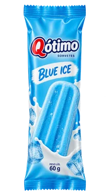
Blue Ice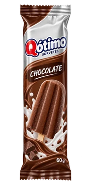
Chocolate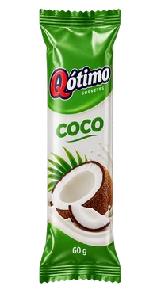
Coco
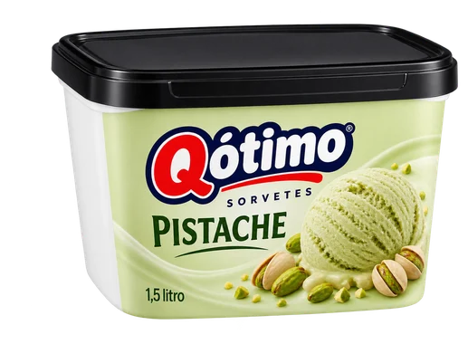
Pistache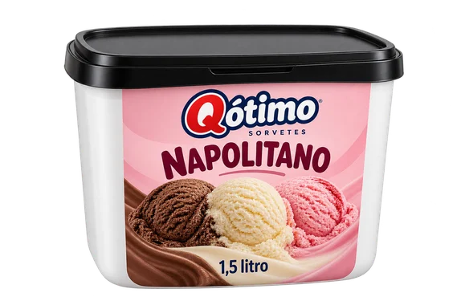
Napolitano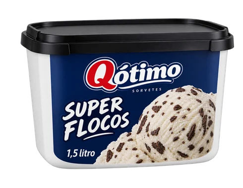
Super Flocos
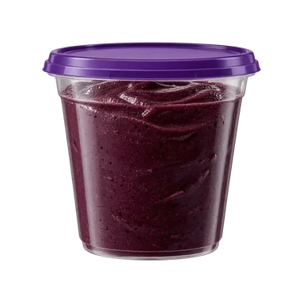
Individual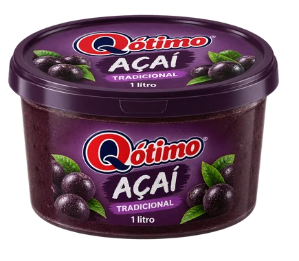
Pote 1 L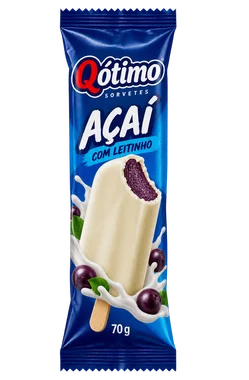
Picolé